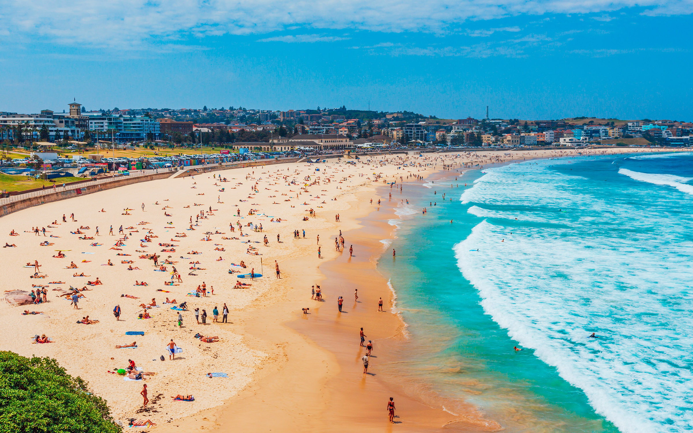
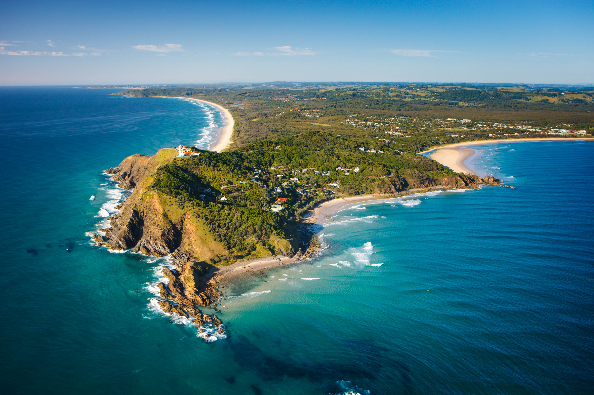

Plages à découvrir et activités à faire
Bondi Beach (Sydney, Nouvelle-Galles du Sud):
Bondi est l'une des plages les plus populaires pour le surf, avec des vagues adaptées à tous les niveaux.Le Bondi to Coogee Coastal Walk offre des vues spectaculaires sur l'océan et des plages isolées à explorer en chemin.

Cable Beach (Broome, Australie-Occidentale):
Cable Beach est réputée pour ses promenades en chameau sur le sable, surtout au coucher du soleil, offrant des vues magnifiques. Explorez la vie marine en faisant de la plongée ou de la plongée en apnée.
Byron Bay (New South Wales):
Byron Bay est une destination incontournable pour les surfeurs de tous niveaux, avec plusieurs plages adaptées.De mai à novembre, vous pouvez observer les baleines qui migrent le long de la côte. La ville est connue pour ses marchés bohèmes, ses boutiques locales et ses restaurants.